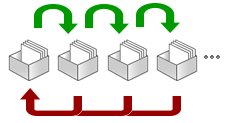
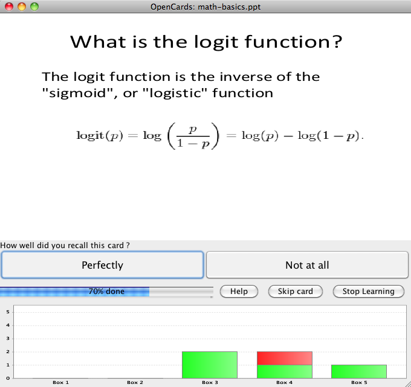

Last Minute learning
While the LTM-learning mode in OpenCards is the most efficient tool to memorize facts and figures, sometimes a more simplistic learning scheme is more appropriate. Just imagine an exam with many pointless facts the professor wants you to memorize. Or an upcoming trip to some far away country for which you want to learn the basic vocabulary as fast as possible. For such situations OpenCards implements a short term memorization scheme based on the well-known Leitner system.
The basic idea of the last minute learning mode is to assume a set of virtual boxes. All new flashcards start in the leftmost box and are shifted rightwards if the student can recall them correctly. If the student fails to recall an item, it is put back into the next left box (or the leftmost box if you set this option in the OpenCards preferences). The learning process ends, if all items are in the rightmost box. By learning this way you can quickly memorize new facts, but don’t expect this knowledge to last forever.

How does the LastMinute mode work in OpenCards?
When you invoke the “Last Minute” mode for a cardset selection in the category view, the LastMinute Configuration Dialog will show up. There you can choose between three different last-minute learning configurations
- You can learn until all cards have been recalled 5 times in a row successfully and are all moved to the last box.
- You learn each file in your selection for a predefined number of minutes
- You can limit the number of recalls. So choosing 100 will cause OpenCards to probe 100 flashcards (including repetitions if necessary, if flashcard are not yet in the final 5th box)
Once, you selected a learning mode, you need to press Start Learning to start the learning mode. The learning mode works as the long-term memorization mode, but has a limited set of feedback buttons
- Perfectly: Press this button, if you could recall the item. This will cause the current card to be moved to the next higher box.
- Not at all: Press this button, if you could not recall the item. The card will be moved to the next lower box. Cards in the first box will remain where they are.

Questions?
If you’ve found this help section to be incomplete or confusing, feel welcome to ask questions and to suggest improvements in our discussion forum.